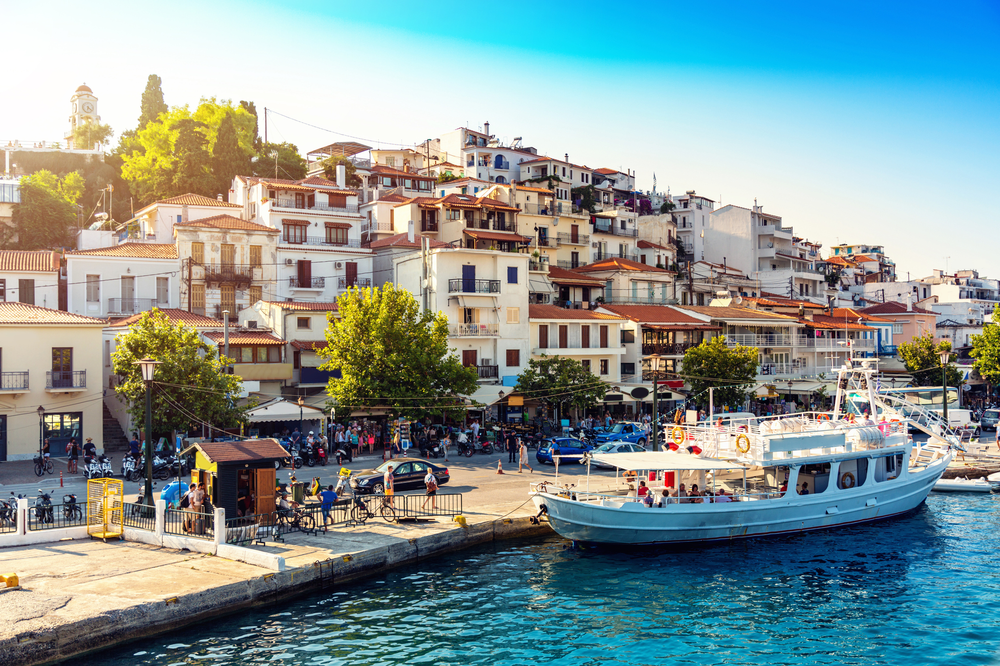
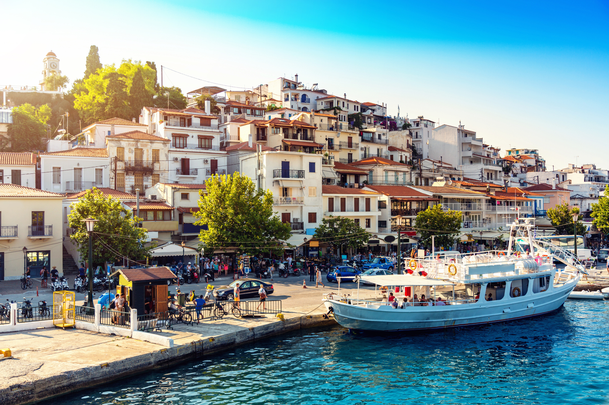

Lalaria Beach
Only reachable by boat from the port of the capital, Lalaria is situated on the north-eastern tip of the island and is a dream-like place of an incredible beauty with huge white cliffs rising out of the clear deep blue sea....
 



Skiathos is famous for its stunning beaches, with over 60 beaches.Some of the most popular beaches include Koukounaries,Lalaria, Banana,Megali Ammos and Tsougria.These beaches offer crystal clear waters and soft sand, making them ideal for swimming, sunbathing, and water sports. Many of the beaches are easily accessible by road or boat.
Only reachable by boat from the port of the capital, Lalaria is situated on the north-eastern tip of the island and is a dream-like place of an incredible beauty with huge white cliffs rising out of the clear deep blue sea....
This is the most famous beach in Skiathos, therefore the most crowded. It is well-known for its extremely fine white sand and its fragrant pine trees forest from which the region took its name....
This beautiful beach is located at the south coast of Skiathos, just 8km south west of the town, near the coastal resort of Kolios. It s a lovely bay with calm, clean waters and fine sand....
Agia Eleni is a small cove that has taken its name from the chapel nearby dedicated to Agia Eleni (Saint Helena). The golden sandy beach is located 14km from Skiathos Town, in the west coast of the island....
The scenic Kanapitsa Beach is a mere 2 Kms. from the No 12 bus stop. In the past this beach used to be very popular. This beach is ideal for family beach vacations. The best part about this beach is that it is never crowded....
Another dirt road from Koukounaries continue further south and split in two: one end of the road leads to the sandy cove called banana because of its shape. It is an organized beach with fine sand and crystal-clear waters....
The beach resort of Agia Paraskevi is placed in the south area of Skiathos, 7 km from Skiathos Town. It is a beautiful beach with blue waters and golden sand. It took its name after the close little church of Agia Paraskevi....
The beach has taken its name from the island located nearby which looks like a dome. Troulos is situated on the southern coast of the island, 9 km from Skiathos Town....
This is a long and well-organized beach situated within a short walking distance of 2km from Skiathos Town. Megali Ammos is one of the most popular beaches in Skiathos due to the crystalline waters....
This is one of the calmest beaches located on the western coast of the island, 15 km west of Skiathos Town. It is a very well-known beach gifted by the nature for its crystal clear waters and unspoiled views....
Xanemos Beach is the most popular nudist beach and is strategically located to the extreme end of the airport runway. The location is so strategic that as soon as a flight lands in the airport....
Tsougrias is the most visited islet located across the port of Skiathos. It is a beautiful place covered with pine trees and eucalyptus with the most amazing beaches with green crystalline waters....